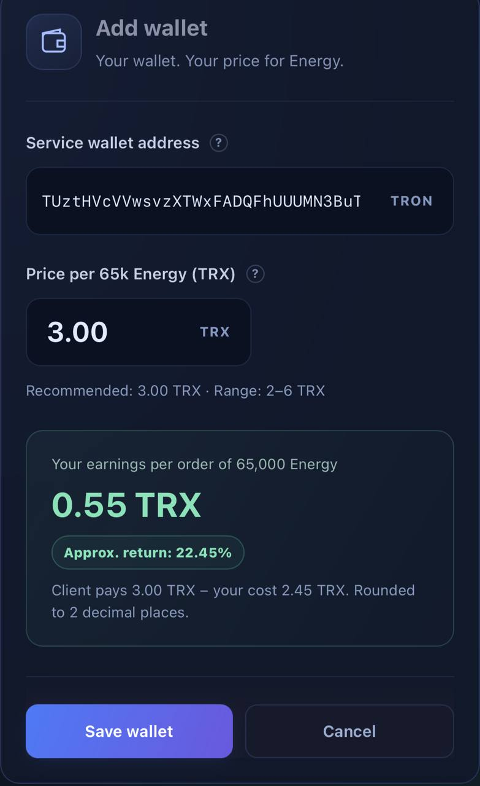
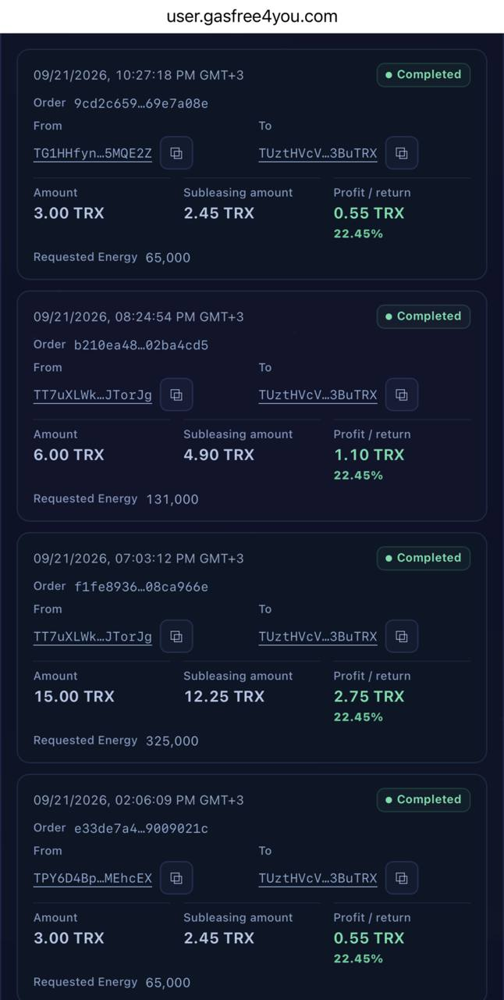

Вы приводите клиентов. Мы выдаём энергию
Сабаренда, или subleasing, позволяет предложить своей аудитории аренду Energy в сети TRON без собственного запаса энергии и разработки системы обработки заказов. Вы создаёте отдельный кошелёк, добавляете его в GasFree4you, назначаете цену и рекламируете адрес.
Клиент переводит TRX на ваш адрес. Если платёж соответствует условиям заказа, сервис делегирует Energy отправителю платежа и списывает стоимость сабаренды с вашего баланса в личном кабинете. Весь клиентский платёж остаётся на вашем кошельке.
Такой формат может подойти автору блога, администратору сообщества или специалисту, который уже помогает людям переводить USDT. Вы продаёте понятную услугу своей аудитории и управляете розничной ценой.
- Клиент → TRX на ваш кошелёк
- GasFree4you → Energy отправителю TRX
- Ваш баланс кабинета → оплата сабаренды
Два баланса, которые важно различать
Ваш отдельный TRON-кошелёк принимает выручку от клиентов. Ключи от него контролируете вы; полученные TRX не перечисляются автоматически в GasFree4you.
Баланс личного кабинета оплачивает выполненные заказы по текущему тарифу сабаренды. Его нужно пополнять отдельно. Даже если на вашем кошельке уже накопились клиентские платежи, при пустом балансе кабинета заказы выполняться не смогут.
Именно поэтому вся сумма платежа остаётся у вас, но не вся является прибылью: у заказа есть себестоимость, которую вы оплачиваете из кабинета.
Как запустить сабаренду
- Создайте отдельный кошелёк TRON, которым управляете сами. Биржевой адрес не подходит. Используйте этот кошелёк только для приёма заказов Energy: личные переводы на него могут быть приняты за оплату.
- Добавьте публичный адрес в раздел сабаренды GasFree4you. Приватный ключ и seed-фраза для этого не нужны.
- Установите клиентскую цену за 65 000 Energy. Сверьте её с текущим тарифом сабаренды и условиями формы, чтобы понимать свою маржу.
- Пополните баланс личного кабинета и поддерживайте запас для новых заказов. Клиентские платежи на кошелёк сами этот баланс не пополняют.
- Опубликуйте адрес, точную сумму оплаты, объём Energy и срок её действия по текущим условиям сервиса. Объясните клиенту, что платить нужно с того собственного кошелька, которому требуется энергия.
- После корректного платежа сервис отслеживает пополнение, проверяет получателя Energy и делегирует ресурс отправителю. Стоимость выполненного заказа списывается из вашего кабинета.
Добавляем кошелёк в личном кабинете
Откройте личный кабинет GasFree4you и перейдите на вкладку «Сабаренда» (Subleasing). Откройте форму добавления кошелька — Add wallet. На скриншоте показан пример заполнения; для настройки используйте свой адрес.
- В поле Service wallet address вставьте публичный адрес своего отдельного TRON-кошелька. Проверьте адрес целиком. Не используйте адрес биржи и не копируйте кошелёк со скриншота.
- В поле Price per 65k Energy (TRX) укажите, сколько клиент платит за 65 000 Energy. На примере установлено 3,00 TRX. Это ваша розничная цена, а не сумма пополнения баланса кабинета.
- Посмотрите блок Your earnings per order: при показанной цене клиента 3,00 TRX и себестоимости 2,45 TRX разница составляет 0,55 TRX. Подсказки, допустимый диапазон цены и тариф проверяйте в актуальной форме.
- Нажмите Save wallet. Проверьте сохранённый адрес и цену, пополните баланс кабинета и только затем передавайте адрес клиентам.
{kind=link}

Где увидеть оплату и статус заказа
После поступления TRX операция появится в ленте сабаренды вместе со своим статусом. Найдите её по времени, номеру Order и адресам From / To. From — отправитель платежа, которому предназначена Energy; To — ваш кошелёк приёма оплаты.
На скриншоте верхняя операция имеет статус Completed — заказ выполнен. У неё Amount 3,00 TRX, Subleasing amount 2,45 TRX, Profit / return 0,55 TRX и Requested Energy 65 000. Так лента позволяет сопоставить платёж клиента, стоимость сабаренды и результат заказа.
- Amount — сколько клиент отправил на ваш кошелёк. Эти TRX остаются у вас.
- Subleasing amount — стоимость заказа, оплаченная с баланса личного кабинета. Она не вычитается из клиентского платежа на вашем кошельке.
- Profit / return — разница между платежом и себестоимостью. В показанном примере 0,55 / 2,45 × 100 ≈ 22,45%: процент считается от себестоимости, а не от выручки. Это показатель конкретного заказа, не годовая доходность.
- Requested Energy — объём энергии в заказе. Статус проверяйте отдельно: появление операции в ленте ещё не означает, что выдача завершена.
{kind=link}

Если операция ещё не имеет статуса Completed, не сообщайте клиенту, что энергия уже выдана. Проверьте баланс кабинета и сведения о заказе; при вопросах передайте поддержке номер Order и хеш платежа, без seed-фразы и приватного ключа.
Значения 2,45 TRX, 0,55 TRX и 22,45% относятся к показанному заказу. Это пример из кабинета, а не обещание постоянного тарифа или дохода.
Что должен знать ваш клиент
Energy получает адрес, с которого пришли TRX, а не адрес, который вы указали где-то в переписке. Клиент должен отправлять оплату из своего TRON-кошелька, с которого затем будет переводить USDT. При выводе с биржи отправителем может оказаться её технический кошелёк: энергия уйдёт не клиенту.
Сумма платежа должна соответствовать настройкам предложения. Не обещайте, что произвольное пополнение или неверная сумма автоматически превратятся в заказ. Для таких ситуаций сверяйтесь с условиями сервиса и поддержкой.
Перед переводом USDT клиент проверяет поступление Energy, срок аренды и оценку комиссии. 65 000 Energy — размер предложения, а не гарантия покрытия любого перевода: потребность зависит от операции. Bandwidth учитывается отдельно.
Подробнее: TRON · Resource model.
Как считается ваш доход
Валовая маржа одного выполненного заказа = цена клиента − стоимость сабаренды. Если клиент платит 3 TRX, а текущая стоимость в вашем кабинете равна C TRX, маржа составит 3 − C TRX. При C выше вашей цены заказ не даст положительной маржи.
Для 100 одинаковых выполненных заказов это 100 × (3 − C) TRX до расходов на рекламу, переводы, налоги и другие затраты. Это формула расчёта, а не обещание количества заказов или доходности.
Текущий тариф смотрите в форме сабаренды: не фиксируйте себестоимость по старой статье или скриншоту. Три TRX ниже — реальная оплата из примера, а не обязательная цена для всех партнёров.
Подробнее: GasFree4you · Subleasing.
Реальный пример: три операции в Tronscan
В примере отправитель — TG1HHfynutuDyCcxog4Z7GthXaBv5MQE2Z. Он платит на адрес TUztHVcVVwsvzXTWxFADQFhUUUMN3BuTRX, затем получает Energy и переводит USDT. Все три операции подтверждены и имеют статус SUCCESS.
Сопоставьте адрес отправителя в первой операции, получателя Energy во второй и отправителя USDT в третьей: это один и тот же кошелёк. Адреса приведены только для разбора истории, а не как инструкция по оплате.
1. Клиент оплатил аренду: 3 TRX
Перевод 3 TRX на кошелёк приёма оплаты. В этой операции комиссия Bandwidth равна нулю: использованы доступные ресурсы.
2. Отправитель получил Energy
Через 12 секунд после платежа зафиксировано делегирование ресурса ENERGY адресу клиента. API Tronscan показывает около 65 008,56 Energy. Это отдельная операция выдачи ресурса, а не перевод клиенту TRX.
3. Клиент перевёл 75 USDT
Через 36 секунд после делегирования клиент отправил 75 USDT. Израсходовано 64 285 Energy, сжигание TRX за Energy — 0, расход за Bandwidth — 0,345 TRX.
По этим трём операциям затраты клиента: 3 TRX за аренду + 0,345 TRX за Bandwidth = 3,345 TRX. Поэтому точнее сказать «без сжигания TRX за Energy», а не «полностью без комиссии». Скорость и расходы этого примера не гарантируются для следующих заказов.
Блокчейн подтверждает платежи, адреса и выдачу ресурса, но не показывает внутреннее списание с кабинета партнёра или его тариф. Точную себестоимость и маржу конкретного заказа проверяют в кабинете.
Ограничения и контроль кошелька
Перед делегированием GasFree4you проверяет адрес, который должен получить Energy, по санкционным спискам. Адресам, найденным в этих списках, Energy не делегируется. Для ситуаций без исполнения обращайтесь к условиям сервиса и поддержке; сама блокчейн-оплата не означает автоматический возврат.
Мы отслеживаем поступления и делегируем ресурс, а ваши приватные ключи остаются у вас. Никому не передавайте seed-фразу или приватный ключ и не подписывайте транзакции для «верификации», подключения либо активации кошелька в сервисе.
Подробнее: GasFree4you · Subleasing.
Как предложить услугу своей аудитории
Начните с короткой инструкции в блоге или сообществе: кому нужна Energy, сколько стоит заказ, с какого кошелька платить и как проверить результат. Используйте три транзакции выше, чтобы показать механику на конкретном примере.
Перед широкой рекламой проверьте адрес, настройки цены и запас на балансе кабинета. Проведите первый заказ с собственных кошельков, разделив кошелёк партнёра и кошелёк клиента, и убедитесь, что понимаете весь путь.
Вы управляете предложением, ценой и отношениями с клиентами. GasFree4you берёт на себя отслеживание оплаты, проверки и выдачу Energy. Так можно начать с небольшой аудитории и расширять услугу по мере спроса.
Нужно ли передавать доступ к кошельку?
Нет. Вы добавляете публичный адрес. Seed-фраза и приватный ключ остаются у вас. Не подписывайте транзакции ради «проверки», подключения или активации кошелька в сервисе сабаренды.